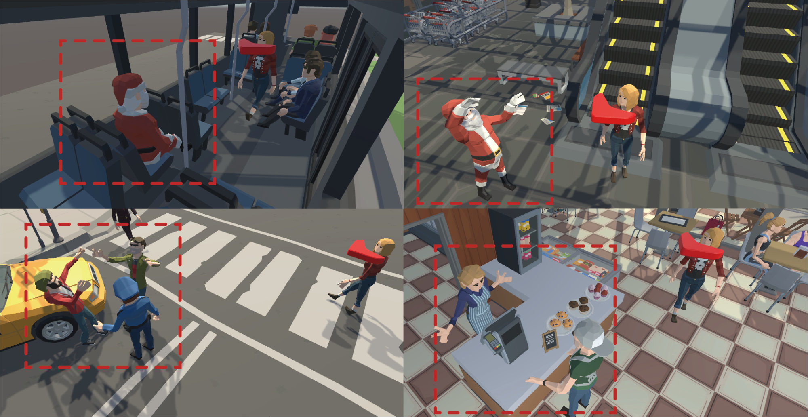
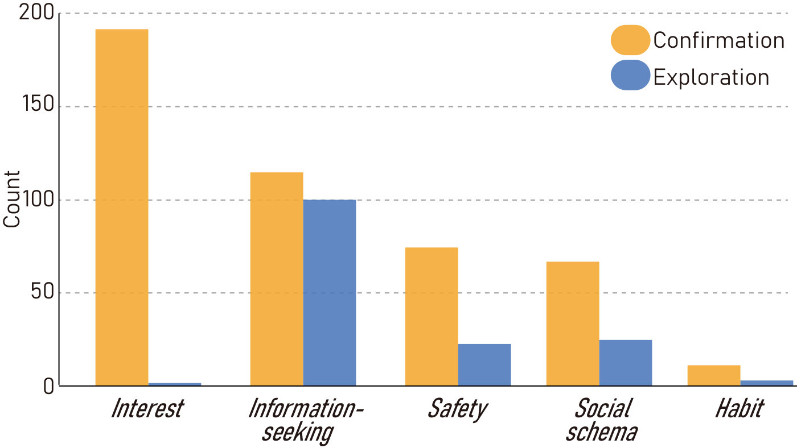
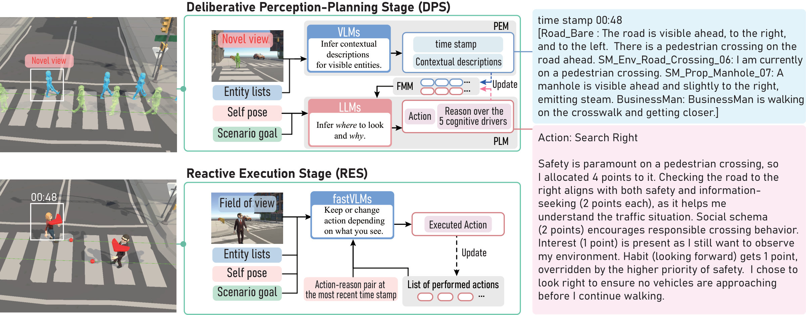
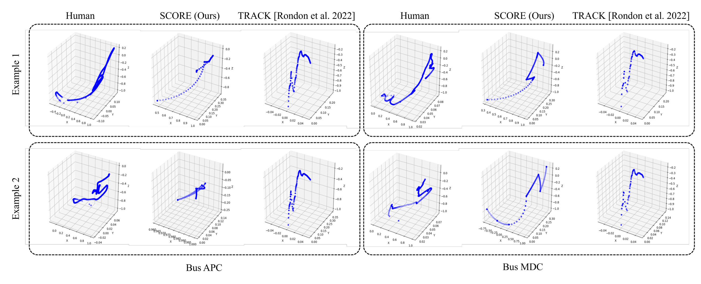
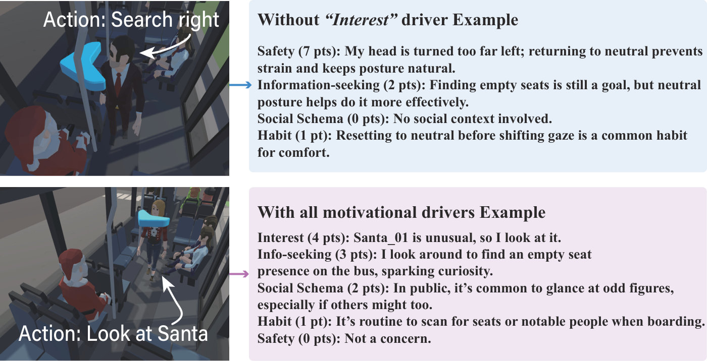
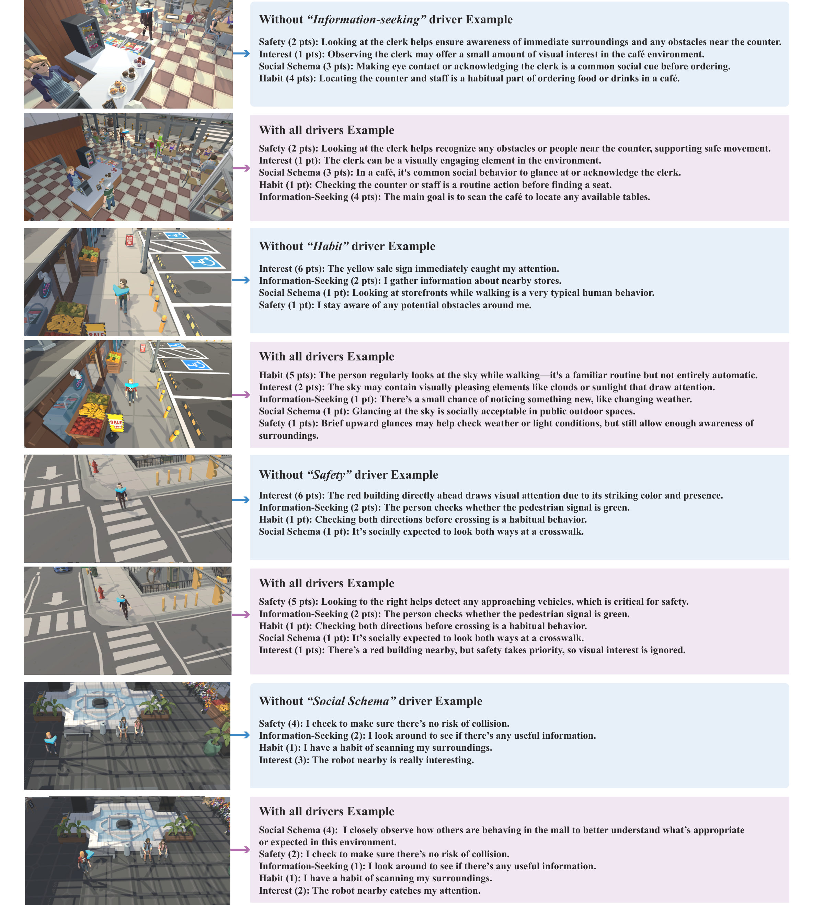
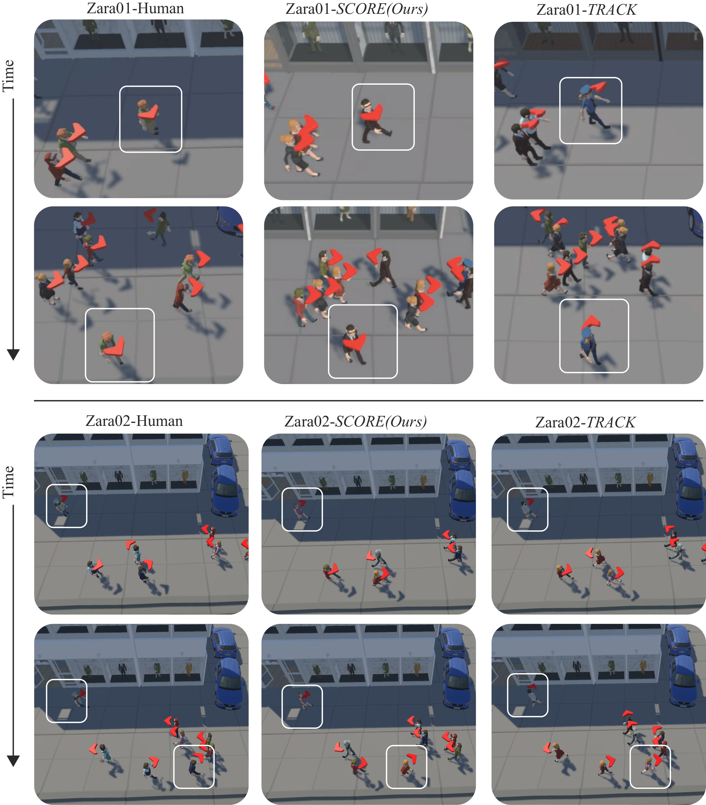
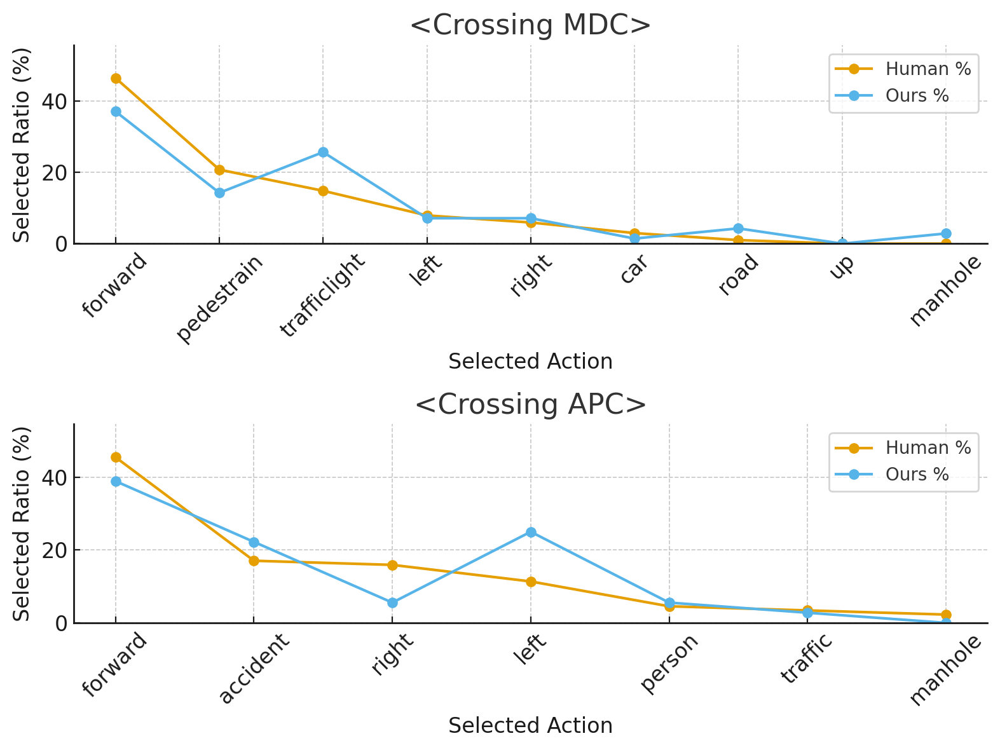

Predicting not only where to look, but why
Natural head rotation is critical for believable embodied virtual agents, yet this micro-level behavior remains largely underexplored. While head-rotation prediction algorithms could, in principle, reproduce this behavior, they typically focus on visually salient stimuli and overlook the cognitive motives that guide head rotation. This yields agents that look at conspicuous objects while overlooking obstacles or task-relevant cues, diminishing realism in a virtual environment.
We introduce SCORE, a Symbolic COgnitive Reasoning framework for Embodied Head Rotation, a data-agnostic framework that produces context-aware head movements without task-specific training or hand-tuned heuristics. A controlled VR study (N=20) identifies five motivational drivers of human head movements: Interest, Information Seeking, Safety, Social Schema, and Habit. SCORE encodes these drivers as symbolic predicates, perceives the scene with a Vision–Language Model (VLM), and plans head poses with a Large Language Model (LLM). The framework employs a hybrid workflow: the VLM–LLM reasoning is executed offline, after which a lightweight FastVLM performs online validation to suppress hallucinations while maintaining responsiveness to scene dynamics. The result is an agent that predicts not only where to look but also why, generalizing to unseen scenes and multi-agent crowds while retaining behavioral plausibility.
Why do people turn their heads?
We recorded head trajectories in VR together with each participant's own explanation for every head turn. These data define the five motivational drivers SCORE reasons over, and serve as the Human reference in all evaluations.

Protocol
Each participant performed ten 60-second trials (5 environments × 2 conditions, randomized order) wearing a Quest 2, with a scenario goal per environment, e.g. Bus: find and sit in an empty seat at the back; Crosswalk: cross safely to the other side. Afterwards, participants reviewed their egocentric footage and explained the motive for every head turn.
Turns were split into confirmation (small checks of peripheral cues) and exploration turns (larger reorientations), and the explanations were coded starting from Safety, Interest and Information Seeking. Two recurring behaviours did not fit: surveying the flow of pedestrians, and habitually glancing at the sky. They became Social Schema and Habit.
Five motivational drivers
Interest
Curiosity about something novel or atypical, like a Santa on the bus.
Information seeking
Acquiring task details: signs, empty seats, the route ahead.
Safety
Minimizing risk: oncoming cars, near collisions, traffic lights.
Social schema
Following social norms, e.g. reading the flow of pedestrians.
Habit
Personal routines, e.g. looking forward or up at the sky while walking.

Deliberate offline, react online

Deliberative Perception–Planning Stage offline
- Every 0.2 s the agent's field of view is passed to the Perception Module; a view is novel when its SSIM to the last novel view drops below the threshold.
- For a novel view, ray casting lists visible objects and agents; a VLM writes contextual descriptions into the Foundational Memory Module (max. 20 entries).
- An LLM reasons over the five drivers and outputs an action (
Looking at <entity>orSearch <direction>), a reason, and a 10-point driver allocation. - The pair is stored with the trajectory time stamp at which it was decided. The head turns at 36°/s.
Reactive Execution Stage near-online
- The agent replays the trajectory; each planned pose is executed when the agent's clock reaches its time stamp.
- ~2 s before display, a FastVLM sees the live view, the entity list and the scheduled action, and answers
keepor a context-appropriate replacement. - This rejects hallucinated actions and reacts to scene changes that were not present at planning time (e.g. a Santa suddenly crossing).
- Latency: VLM 3.50 ± 0.64 s, LLM 7.10 ± 1.22 s, FastVLM 1.49 ± 0.41 s.
Compare SCORE, Human, and Track in the study scenes
Pick one of the ten user-study scenarios and replay pre-computed head trajectories. Nothing is generated live: SCORE runs, VR participants, and the saliency baseline Track are recorded data. Trajectories are aligned by progress along the path (participants walked at their own pace).
The shape of looking around
Each trace follows the tip of the head's forward vector over a whole trial (light → dark = start → end). Humans sweep wide arcs toward the path, seats, or traffic, then return. SCORE produces the same kind of purposeful excursions. Track barely leaves a small saliency-driven region, and its traces look alike regardless of the scene.

Rotate it yourself
The same representation computed from the replay data above. Drag to orbit (all three views move together); pick the condition and trial.
What SCORE says while it looks around
Action–reason pairs logged from SCORE runs (Gemini). Single-agent traces show the DPS plan; multi-agent traces also show what RES did with each planned action: keep, or an override from the live view. Entity names are the scene object names the agent is allowed to reference.
Removing a driver changes the reasoning


Try the SCORE reasoning step with Qwen on your own machine
This page cannot run the full simulation, but it can send the exact SCORE prompts to an Ollama server running on your computer. Your browser talks to localhost directly; nothing is sent to us. The released Unity code has the same switch (provider = Ollama or SCORE_PROVIDER=ollama).
Setup (once)
1. Install Ollama and pull a vision-language model (≈ 6 GB):
ollama pull qwen3-vl:8b2. Allow this page to call your local server, then start it. macOS / Linux:
OLLAMA_ORIGINS="https://juyeonghwang.github.io" ollama serveWindows (PowerShell; quit the Ollama tray app first):
$env:OLLAMA_ORIGINS="https://juyeonghwang.github.io"; ollama serveWorks in Chrome, Edge and Firefox. Chrome may ask for permission to access devices on your local network; allow it. Safari blocks requests from https pages to localhost.
Run the demo to see the perception memory, the driver allocation, the explanation and the chosen head action.
Show prompts
Closer to human head motion than saliency
Normalized DTW between generated and human head-orientation quaternion sequences (lower is better; ± 95% CI). IntraHuman compares two random halves of the participants and is an empirical lower bound.
Multi-agent (UCY crowds)

Responsiveness to unseen distractors
DPS / RES conditions. RES alone (MDC-APC) already improves over never seeing the distractors (MDC-MDC).
Where do they look?

Ablation study (single-agent)
BibTeX
@inproceedings{hwang2025score,
title = {How Does a Virtual Agent Decide Where to Look? Symbolic Cognitive Reasoning for Embodied Head Rotation},
author = {Hwang, Juyeong and Hong, Seong-Eun and Seon, JaeYoung and Kang, HyeongYeop},
booktitle = {SIGGRAPH Asia 2025 Conference Papers},
year = {2025}
}